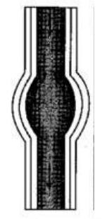
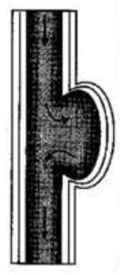
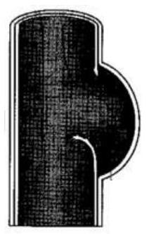

ANEURISMS
ANEURISMS
Def: These are out pouching or dilatation of the arterial wall and are common problems involving the aorta.
Incidence: They occur in men more often than women and the incidence increases with age. They are seen more often in patients who are 70 to 80 years old and are considered uncommon before age of 50 years.
Pathophysiology
- The most common cause of aortic aneurisms is arteriosclerosis; plaqueys composed of lipids, cholesterol and fibrin and other debris adhere along and beneath the intima.
- Plaques formation cause degenerative causes in the media leading to the loss of elasticity, weakening and eventual dilatation of the aorta. As this condition.
- Occur the pulsatile flow of the blood places added stress on the already weakened vessel and causes it to increase in the size. The growth rate of;
- Aneurisms is unpredictable but the larger the aneurism the greater
- The risk of rupture. Arteriosclerosis can affect the entire length of the aorta, however most aneurisms related to arteriosclerosis are found in the abdominal aorta below the level of the renal arteries.
Causes of Aneurism
- Arteriosclerosis (the major cause)
- Syphilis
- Infections like TB bacterial endocarditis
- Congenital disorders such as coarctation of the aorta and trauma
Classification of Aneurisms
They are classified into 2 basic classifications;
- True
- False
I. True Aneurism
Is one in which the wall of the artery forms the aneurism with at least one vessel layer still intact. This type is most commonly caused by arteriosclerosis. 3/4 occurs in the abdomen and 1/4 in the thoracic aorta. Popliteal artery aneurisms rank 3rd in frequency. True aneurism is further sub-divided into:
- a) Fusiform dilation
- b) Saccular dilatation
A. Fusiform Aneurism
It is circumferential and relatively uniform in shape.
B. Saccular Aneurism
It is potch like and has a narrow neck connecting the bulge to one side of the arterial wall.
II. False/Pseudo Aneurism
It is not an aneurism but a disruption of all layers of the arterial wall resulting in a leak of blood that is contained or temponaded by surrounding structures. False aneurisms may result from trauma infection or a disruption of an arterial suture line after a bypass surgery.
The false aneurism may also result from arterial leakage after removal of arterial cannula such as upper exstremity arterial cathetrers and intra-aortic balloon pump devices.
Clinical Manifestations
These are varied depending on the site of the aneurism. Thoracic aneurisms are usually asymptomatic.
- Deep diffuse chest pain.
- Aneurism located in the ascending aorta at the arch can produce hoarseness in the client as a result of pressure on the recurrent laryngeal nerve.
- Pressure on the oesophagus can cause dysphagia (difficult in swallowing).
- If the aneurism presses on the superior vena cava it can cause distended neck vein and oedema of the head and arm.
- Pressure of aneurism on pulmonary structures can lead to coughing; dyspnea and airway obstruction.
Management
i) Diagnostic studies
Most aneurisms are found on routine physical or x-ray examination i.e.
- a) Chest x-ray films are useful in demonstrating the mediasternal silhouette and any abnormal widening of the thoracic aorta.
- b) A plane abdominal film may show calcification within the wall of an abdominal aortic aneurism.
- c) When ECG is performed, it is used to rule out evidence of myo-cardial infarction.
- d) Echo cardiograph assists in the diagnosis or aortic insufficiency related to the ascending dilation.
Other examinations are: Computerized thomography, aortograph and ultra sanography.
Therapeutic Management (Medical Management)
The goal of therapeutic management is:
To prevent rupture of the aneurism: Therefore early detection and prompt reaction of the client are implative. Once an aneurism is suspected studies are performed to determine its exact size and location. A careful review of all body systems is necessary to identify any co-existing disorders. The carotid and coronary arteries should be assessed for an arteriosclerosis disease indication if obstructions in these vessels are present: they may need to be corrected be the aneurism is repaired.
The only effective reaction for an aortic aneurism is surgery. Surgical repair of fusiform aneurism is known as Endoaneurysmorrhaphy. The technique involves incising the diseased segement of the aorta; removing an intra luminal plug inserting a synthetic graft like Dacron or polytetrafludethylene) which is sutured to the normal aorta proximal and distal to the aneurism and then suturing the native aortic wall around the graft. If the iliac arteries are also aneurismal, the entire diseased segment is replaced by a bifurcation graft.
Nursing Management
Health Promotion and Maintenance
The client with aneurism may have a variety of manifestations or may be totally free of symptoms. Therefore, the nurse must use assessment skills to focus on early detection and reaction (proper history taking and physical examination). Client should be urged to receive regular routine physical examination and should be reminded that any symptom no matter how minor must be investigated if it persists. Nurses need to encourage persons with venereal diseases and their contacts to obtain appropriate therapeutic intervention in the course of disease and their contacts to obtain appropriate therapeutic intervention in the course of disease progress. Nurses must be aware of cardiovascular disease factors which are risk and be alert for opportunities to teach health measures to clients in the hospital and the community. Trauma victims should be urged to seek medical attention even in the absence of symptoms.
Pre-Operative Care
The nursing role during the pre-operative period should include:
- Teaching.
- Providing support for their clients and families.
- And careful assessing all body systems.
A thorough nursing history and assessment should be performed because most aneurisms are arterosclerotic and arterosclerosis is a systematic disease process it is likely that the disease process is present throughout the body. Therefore, it is important the nurse to watch for signs:
- Of cardiac, pulmonary; cerebral and peripheral vascular problems.
- Clients should also be monitored for signs of ruptured aneurisms.
- Establishing a data baseline is important for later post-operative assessment and intervention. In addition to gathering data: the nurse should;
- Observe the client for subtle abnormality. Special attention should be paid to the quality and character of peripheral pulses; the voice and neurological status. Arterial pulse sites in the lower extremities should be checked and marked before surgery.
Post-Operative Care
In addition to maintaining adequate respiratory function; fluid and electrolyte balance and pain control, the nurse needs to monitor graft patency; renal perfusion and circulation. The nurse can also assist in preventing ventricular arrhythmias; infections and neurological complications.
A. Graft Patency
Patency of an aortic graft can be assured with maintenance of adequate;
- Systematic blood pressure. Prolonged hypotension may result to thrombosis of the graft as a result of decreased blood flow. Hypovolemia can be avoided by administration of IV fluids and blood components as indicated.
- Central veneous pressure readings should be monitored hourly to help.
- Assess the clients state of hydration. Marked hypertension may cause undue stress on the proximal and distal arterial anastomosis resulting in leakage of blood or rupture at the suture line. Pharmacological interventions with diuretics or anti-hypertensive agents may be indicated of severe hypertension persist.
B. Ventricular Dysrhythmias
Are usually caused by hypoxia; hypothermia or unrecognized electrolyte imbalance clients with coexisting coronary artery arteriosclerosis are prone to disrhythmias.
Nursing Interventions
- Do cardiac monitoring and the result of electrolyte studies and arterial.
- Blood gases determinations. Persons who return from surgery with
- Hypothermia should be placed with hyperthermia blankets urinary output should be monitored carefully.
C. Infection
The development of a prosthetic vascular graft infection can be a life threatening infection. Nursing intervention to prevent infection should include;
- Ensuring that the patient receives a broad spectrum antibiotic as prescribed to maintain adequate blood levels of the drug. It is important;
- To assess body temperature regularly and reporting any elevation. Laboratory data;
- Should also be monitored because arising wide blood cell count may be the first indication of an infection.
- The nurse should ensure adequate nutrition; monitoring serum albumin levels to ensure proper wound healing; signs of infection or any unusual drainage.
- Aseptic technique should be maintained when handling any catheters or drainages because they are frequently a portal of entry for bacteria.
- Meticulous perineal care for clients with indwelling catheter for urine is also essential to minimize incidences of urinary tract infections.
- Operation site should be kept clean and dry.
D. Gastro Intestinal Status
After abdominal aneurism resection paralytic ileus may develop as a result of the continual manipulation and displacement of the bowel for long periods of the surgery. The intestines may become swollen and bruised and peristalsis ceases for variable intervals.
An NGT is inserted and connected to allow intermittent suction. This decompresses the stomach and duodenum and prevents aspiration of the stomach contents and decreases pressure on the suture lines.
The nurses Responsibility
- The NGT should be irrigated with N/saline solution as needed and the amount.
- Character of the drainage should be recorded.
- The nurse should auscultate for the return of bowel sounds.
- The passing of flatus can also be a sign of returning bowel functioning and should be reported.
- If the arterial blood supply to the bowel is disrupted during the surgery, ischaemia or death of the intestinal tissue may result. This is evidenced by lack of bowel sounds; fever; abdominal distension and diarrhea stools.
E. Neurological Status
The neurological complications may arise after procedures of surgical or the aorta especially when the ascending aorta and the arch are involved.
Nursing Interventions
- Hourly assessment of neurological signs i.e. level of consciousness pupil size and response to light; ability to move all extremities and quality of the hand grasp. These information should be recorded in detail;
- With careful description of the patients response. Any function decreased from the baseline assessment should be reported to the doctor immediately.
F. Circulatory Status
The anatomical location of the aneurism indicates the areas of major concern related to the circulatory status. For the $1^{\text {st }} 24$ hours, peripheral pulses should be checked regularly every hour. Depending on where surgery was performed, pulses to be assessed includes the dorsals pedis; posterior tibial; popliteal; removal as well as the brachial; radial; carotid and termporal pulses. It is also important to note the temperature, colour and movement of the extremities.
G. Renal Perfusion
- One of the causes of decreased renal perfusion is the possible dislodgement of a fragment of debris from the aorta that subsequently lodges in one or more renal arteries. This causes obstruction and ischaemia of one or both kidneys.
- Hypotension, poor hydration, prolonged aortic clamping or blood loss can also lead to decreased renal perfusion. Therefore, an accurate record of fluid intake and urine output should be kept until the patient resumes the pre-operative diet. If hourly urine output drops below 30 mls per hour for 2 consecutive hours, the doctor should be notified immediately. Central veneous pressure readings also give important information regarding hydration.
There should be daily blood urea nitrogen (BUN) and serum creatinine studies to evaluate renal function.
Chronic/Subsequent Management
Psychological Support
Clients may be apprehensive about returning home after major surgery involving the aorta .They should be encouraged to express their concerns and be reassured that they can return to activities of normal living. They are taught to observe changes in color or warmth of the extremities. They can also be taught to take peripheral pulses.
Complications of Aneurism
- Rupture of the aneurism: If rupture occurs posteriorly into the lateral peritorial space bleeding may be tamponaded by surround structures preventing leakage. In this case, the patient has severe back pain clo and may have back or flunk ecchymosis (turnars sign).
- Paraplegia: Occurs if the blood supply to the spinal cord is severely compromised as a result of rupture, prolonged hypertension or prolonged clump time during surgery.
- Pressure
- Thrombosis
- Stroke
- Lower extremity ischaemia.
If rupture occurs anteriorly into the abdominal cavity death from massive haemorrhage is likely. If the client does reach the hospital presenting signs are manifestations or shock such as tachycardia, hypotension, pale clummy skin, decreased urinary output, altered sensorium as well as abdominal tenderness.